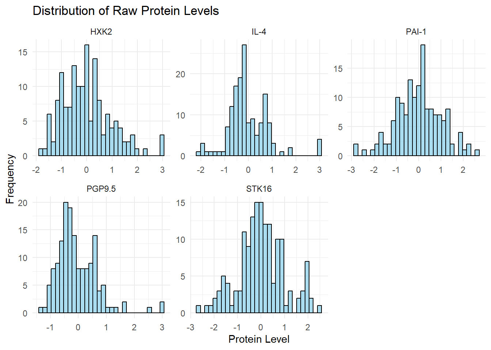
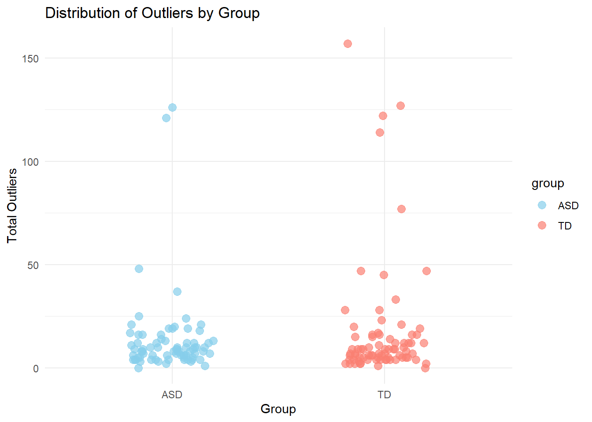

Biomarkers of ASD
Abstract
Based on the studies on biomarkers of ASD done by Hewitson et al., we use the whole dataset to further explore the impacts of various modifications. In part one, we examine the distribution of raw values for a sample of proteins including HXK2, IL-4, PAI-1, PGP9.5, and STK16. In part two, we continue working on exploratory analysis of outlying values before conducting the outlier trimming in the preprocessing. In part three, we repeated the selection methods which are random forests, multiple testing, and correlation tests on a training dataset with modifications. From each of the selection methods, we choose 25 top predictive proteins and use a fuzzy intersection to form our protein panel. In part four, we use a simpler panel to examine the corresponding accuracy.
Dataset
Serum samples from 76 boys with ASD and 78 typically developing (TD) boys, 18 months-8 years of age, were analyzed to identify possible early biological markers for ASD. The ASD group was comprised of 76 subjects with a mean age of 5.6 years (SD 1.7 years). The TD group was comprised of 78 subjects with a mean age of 5.7 years (SD 2.0 years). Measured variables include ADOS and 1317 proteins. For the ASD group, ADOS diagnostic algorithms consisting of two behavioral domains: Social Affect (SA) and Restricted and Repetitive Behaviors (RRB) were used to determine an ADOS total score, which provides a continuous measure of overall ASD symptom severity. All subjects were healthy, defined as being fever-free for 24 hours, and presenting with no clinical symptoms. A fasting blood draw was performed on ASD and TD subjects between the hours of 8–10 am in a 3.5 ml Serum Separation Tube using standard venipuncture technique.
In the published data, 192 proteins failed to pass quality control (QC). After removing these proteins, 1,125 proteins were analyzed. The protein abundance data were normalized by taking log10 transform and then z-transformation. To deal with outliers, any z-transformed values less than -3 and greater than 3 were clipped to -3 and 3, respectively.
Summary of published analysis
Hewitson et al. first used the R package ‘randomForest’ to train the RF models and calculate feature importance. They chose MeanDecreaseGini as the surrogate representing a protein’s importance in predicting ASD versus TD. With normalized data, they trained an RF model 1000 times. Each protein’s importance value was averaged over the 1000 runs. The 10 proteins with the highest averaged importance values were chosen for the RF-based prediction model. For multiple testing, Hewitson et al. used t-tests to select the 10 proteins with the most highly significant t-test values for the prediction model. Thirdly, a correlation approach was used to calculate each protein’s correlation with ADOS total scores (SA + RRB) as a measure of ASD severity. Based upon the absolute values of each protein’s correlation coefficient, the 10 most highly correlated proteins were selected as the correlation-based predictive proteins. After identifying the top-10 predictive proteins from each of the 3 models, they found 5 proteins that were common to each method used which are considered ‘core’ proteins. A logistic regression model was used with datasets based upon the RF model, the t-test model and the correlation model, taking the subjects’ assigned group (ASD or TD) as output variables to evaluate the 13 additional proteins.
Five core proteins mitogen-activated protein kinase 14 (MAPK14), immunoglobulin D (IgD), dermatopontin (DERM), ephrin type-B receptor 2 (EPHB2), and soluble urokinase-type plasminogen activator receptor (suPAR) are used. And four additional proteins are selected for their resulted increase in AUC when being added which are receptor tyrosine kinase-like orphan receptor 1 [ROR1], platelet receptor Gl24 [GI24], eukaryotic translation initiation factor 4H [elF-4H], and arylsulfatase B [ARSB]. Combining the 5 core proteins with the additional 4 proteins resulted in an AUC = 0.860±0.064, with a sensitivity = 0.833±0.118, and specificity = 0.846±0.118, and represents the 9 optimal proteins (AUC_Optimal).
Findings
Impact of preprocessing and outliers
Tasks 1
The data seems to be heavily skewed to the right. By doing a log transform, the skewness of the data would be lessened, making the patterns easier to analyze as most models assume constant variance.
Task 2
# A tibble: 154 × 2
group total_outliers
<chr> <dbl>
1 ASD 9
2 ASD 10
3 ASD 12
4 ASD 17
5 ASD 4
6 ASD 10
7 ASD 6
8 ASD 6
9 ASD 126
10 ASD 10
# ℹ 144 more rows
We found that the average amount of outliers for ASD is 13.2 and 17.6 for TD. Also, we can see that very subject had at least 1 outlier except for 2. 5 subjects had a dispropportionate amount of outliers (>100), and 2 of these subjects were ASD while 4 were TD. As you can see in our graph, outliers didn’t appear more frequent in one group in regards to another.
Methodlogical variations
Task 3
# A tibble: 4 × 2
protein data
<chr> <list>
1 CHIP <tibble [123 × 2]>
2 CEBPB <tibble [123 × 2]>
3 NSE <tibble [123 × 2]>
4 PIAS4 <tibble [123 × 2]>[1] "Top 10 proteins for multiple testing:" [1] "DERM" "Calcineurin" "RELT" "CXCL16, soluble"
[5] "TGF-b R III" "M2-PK" "EPHB2" "C1QR1"
[9] "FCN1" "IGFBP-4" [1] "Top 10 proteins for random forest:" [1] "TGF-b R III" "EPHB2"
[3] "SNP25" "Aflatoxin B1 aldehyde reductase"
[5] "MAPK14" "CD27"
[7] "GDF-11/8" "PPID"
[9] "Gelsolin" "DERM" [1] "Top 10 proteins for correlation method:" [1] "TRAIL R4" "EFNB1" "PDK1" "IL-1F8" "Cystatin-S"
[6] "SMOC1" "Apo E" "CO8A1" "SPTA2" "LIGHT" [1] "DERM" "TGF-b R III" "EPHB2" # A tibble: 4 × 3
.metric .estimator .estimate
<chr> <chr> <dbl>
1 sensitivity binary 0.75
2 specificity binary 0.733
3 accuracy binary 0.742
4 roc_auc binary 0.763By only applying the selection methods to training dataset, there are only three core proteins which are “DERM”, “TGF-b R III”, “EPHB2”. We are able to get a similar sensitivity, specificity, accuracy and roc_auc values which are around 0.7.
ASD TD class.error
ASD 48 28 0.3684211
TD 17 61 0.2179487# A tibble: 76 × 1,319
group ados CHIP CEBPB NSE PIAS4 `IL-10 Ra` STAT3 IRF1 `c-Jun`
<chr> <dbl> <dbl> <dbl> <dbl> <dbl> <dbl> <dbl> <dbl> <dbl>
1 ASD 8 0.335 0.520 -0.554 0.650 -0.358 0.305 -0.484 0.309
2 ASD 21 -0.0715 1.01 3 1.28 -0.133 1.13 0.253 0.408
3 ASD 12 -0.406 -0.531 -0.0592 1.13 0.554 -0.334 0.287 -0.845
4 ASD 20 -0.102 -0.251 1.47 0.0773 -0.705 0.893 2.61 -0.372
5 ASD 22 -0.395 -0.536 0.0410 -0.299 -0.830 0.899 1.01 -0.843
6 ASD 17 -0.126 1.27 -0.892 0.239 -0.344 0.216 0.211 0.221
7 ASD 15 0.486 0.748 -1.09 0.462 0.570 -0.0682 1.01 1.21
8 ASD 10 -0.990 -1.10 0.231 -0.885 -0.151 0.0307 -0.0346 -0.891
9 ASD 22 -0.108 3 2.32 3 2.76 1.70 0.209 3
10 ASD 17 0.485 -0.234 -0.697 -0.286 0.0331 1.01 -0.248 -0.293
# ℹ 66 more rows
# ℹ 1,309 more variables: `Mcl-1` <dbl>, OAS1 <dbl>, `c-Myc` <dbl>,
# SMAD3 <dbl>, SMAD2 <dbl>, `IL-23` <dbl>, PDGFRA <dbl>, `IL-12` <dbl>,
# STAT1 <dbl>, STAT6 <dbl>, LRRK2 <dbl>, Osteocalcin <dbl>, `IL-5` <dbl>,
# GPDA <dbl>, IgA <dbl>, LPPL <dbl>, HEMK2 <dbl>, PDXK <dbl>, TLR4 <dbl>,
# REG4 <dbl>, `HSP 27` <dbl>, `YKL-40` <dbl>, `Alpha enolase` <dbl>,
# `Apo L1` <dbl>, CD38 <dbl>, CD59 <dbl>, FABPL <dbl>, `GDF-11` <dbl>, … [1] "DERM" "RELT" "Calcineurin" "IgD"
[5] "PTN" "FSTL1" "MAPK2" "TGF-b R III"
[9] "MMP-2" "gp130, soluble" "Notch 1" "ALCAM"
[13] "MATN2" # A tibble: 4 × 3
.metric .estimator .estimate
<chr> <chr> <dbl>
1 sensitivity binary 0.812
2 specificity binary 0.867
3 accuracy binary 0.839
4 roc_auc binary 0.946To see whether choosing a larger number of predictive proteins would impact our results, we decided to select the top 25 proteins from random forest and t tests and found the metrics on the resulting model. After intersecting, we got a larger model of 13 proteins: “DERM”, “RELT”, “Calcineurin”, “IgD”, “PTN”, “FSTL1”, “MAPK2”, “TGF-b R III”, “MMP-2”, “gp130, soluble”, “Notch 1”, “ALCAM”, and “MATN2”. With this panel, we fitted a logistic regression model, which reported a higher ROC_AUC of 0.946.
[1] "DERM" "IgD" "TGF-b R III" "MAPK14" "FSTL1" # A tibble: 4 × 3
.metric .estimator .estimate
<chr> <chr> <dbl>
1 sensitivity binary 0.75
2 specificity binary 0.8
3 accuracy binary 0.774
4 roc_auc binary 0.888To perform a fuzzy intersection to combine top predictive proteins across our selection methods, we normalized random forest importance scores and converted p-values from our t tests so that we could compare the results from the methods. We then found the minimum of these values for each protein and selected a threshold for which variables we would want to include in a new regression analysis. Through this regression we found a ROC_AUC of 0.888, which was lower than the original analysis, indicating that our model performed slightly worse, but comparably.
Improved classifier
Task 4
# A tibble: 1 × 3
.metric .estimator .estimate
<chr> <chr> <dbl>
1 accuracy binary 0.871First, we split our data into training and testing sets, with 80% of the data being training data. Next, we performed cross validation on the training set to get a panel of proteins. Then, we fit a binomial generalized linear model to this panel of proteins and evaluated our metrics. We reported an accuracy of 0.871 on our panel of proteins.